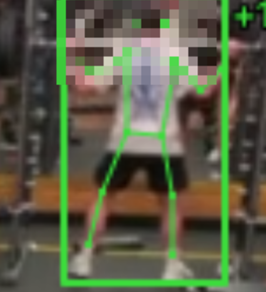
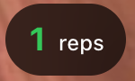
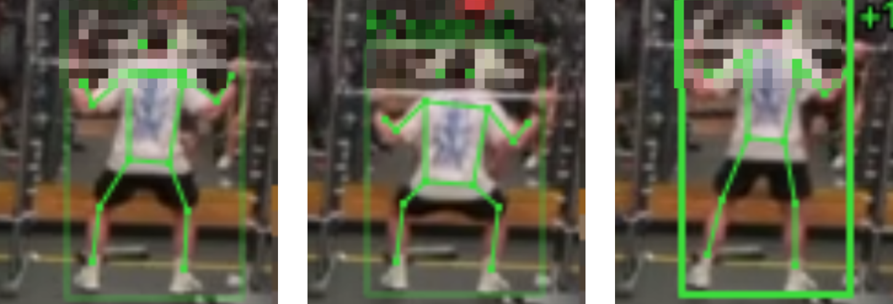

Spottr turns the cameras a gym already has into an automatic workout log.
Automatic workout tracking from existing gym cameras. Draft, 2026
[TODO: presenter names, contact email, and which submission this is (YC W27 application vs a16z pitch)]
Spottr
Problem
Gyms lose about a third of members yearly; engaged members stay seven months longer.
66.4%
average annual retention
23 vs 16
months: engaged vs others
2.1 → 1.5
visits a week, 2019 to 2024
[TODO: one real quote or objection from a gym owner we spoke to]
HFA 2025 Benchmarking (175 operators, data year 2024); Les Mills 2025 (2.6M member journeys, correlational). HFA 2026 reports a decade-low churn for 2025.
Spottr
Why now
Strength is booming, gyms are healthy, and AI labelling is estimated at under a cent per set.
81M
US members, 2025
Free weights grow fastest
Revenue +10.7%, EBITDA 22.1%
AI label ~$0.001-0.005 (est.)
[TODO: share of mid-tier gyms with IP cameras covering the weight floor and RTSP access, add only after first site visits]
HFA Global Report 2026; 03_market.md. Free weights: fastest-growing category since 2021. Revenue and EBITDA are 2025 medians. AI cost is an estimate (token counts not measured); model prices rose in 2026 and step up again on 2027-01-01 (03_market.md §4.1-4.2).
Spottr
Solution
Spottr is built to log sets from a gym's existing cameras, with nothing for members to wear or type.
For members
Demo data
The gym pays; members use it.
[TODO: how a person on camera is linked to a member account (check-in, app QR, re-ID), unresolved]
context.md §What Spottr is; 01_product.md §7. The gym-side operator dashboard is simulated today.
Spottr
How it works
Pose tracking counts reps without per-exercise rules; tested on squats and dips only.
Pose tracking

Rep counting

One blurred snapshot per set names the exercise
Real pipeline output
Replay pixelates detected bystanders. On-site processing is the target.
Step 2 counts reps from joint motion; the exercise label never changes the count (01_product.md §3). Not every person is guaranteed to be detected, so undetected people are not blurred. Today's Gemini snapshot is one blurred composite per set; processing on a Mac mini in the gym is the target, not deployed (01_product.md §2-§4; Privacy page).
Spottr
Product
The replay shows the real pipeline: a skeleton overlay on a recorded squat.

Real pipeline output, lifter's face pixelated for this deck
Real
Recorded clip; 5 squats counted (team-stated).
Simulated
Operator dashboard, most member tabs.
[TODO: confirm the lifters in squat.mp4 and dip.mp4 are team members or have consented before showing replay frames]
01_product.md §1, §3, §4 (maturity table); 00_summary.md §2 row 11. Cropped to the lifter; other people in the replay are pixelated when detected.
Spottr
Where we are
A 3-hour sprint produced a technical core that has run on recorded clips, not a live gym camera.
Built
17/17 synthetic tests 5 squats, 10 dips
Outreach started
Not yet
Live cameras, pilots, LOIs, revenue
[TODO: number of gyms contacted, replies, and any camera setup seen][TODO: named VCs or ex-YC founders who gave positive feedback, only with their permission]
Berkeley x Google DeepMind Hackathon, 2026-09-27 (context.md); no placement. Also 0 false sets on a crowd clip; 13-14 fps on one stream. Counts are team-stated on 3 clips, not a benchmark.
Spottr
Market
We estimate about 6,400 target US gyms, roughly $30M a year, on stated assumptions.
55,281
US clubs
~6,400 · $30.5M
assumed camera-suitable gyms (30% share, 50% camera coverage)
$4.2M · $0.8M
California · Bay Area
Estimate, not data
[TODO: venture-scale story beyond mid-tier gyms (chains, B2C freemium, other segments, equipment-utilisation data, international), not sized in the research; founders to choose]
03_market.md §1.4 (55,281 clubs, 2023 data; 42,524 outside the top 10), §3.3 ($399 a month; Bay Area share is a population proxy), §3.4 (year-5 base case 116 gyms, $0.56M ARR).
Spottr
Business model
Central-case gross margin is 44.6% at $399 with one box; about 37% with two.
44.6%
$399 tier, one box (central case)
37.4%
$399 tier, two boxes
27.1%
$299 tier, Flash, one box
Hardware $1,489-2,388 per gym.
Illustrative; no customer has paid
[TODO: confirm pricing model with founders (per-location tiers $299/$499, hardware included, 60-day pilot to LOI)]
Per month: $399 revenue, $221 costs, $178 gross profit (one box). Assumes a 400-member gym, Gemini Flash at the 2027 price and hardware amortised over 36 months (assumption); $299 on Flash-Lite would be 54.2%. Hardware is carried by Spottr. Break-even: keep 5.8-9.3 members a year (retention effect unproven).
Spottr
Competition
Incumbents log on their own machines, wearables need a device, and rival Exersight installs its own cameras.
EGYM, Technogym
Exersight
WHOOP, Apple Watch
Hevy, Strong
GroeFit
Spottr (target)
New hardware
Existing cameras
Member-side · Gym-side
[TODO: differentiation vs Exersight, what Spottr does that it does not]
04_competition.md §1, §4, §6, §8. Positions are our reading, not measured. Incumbents could add camera tracking later; the YC company directory is not yet scanned (04_competition.md §9).
Spottr
Team
Three full-time founders with business, entrepreneurship and robotics backgrounds.
Felix Müller-Gliemann
BSc Business Administration (LMU Munich), exchange at UC Berkeley (Haas). Ex-Founders Associate, AI startup.
Frontend, sales, fundraising.
Martin
MSc Entrepreneurship.
Gard
MSc Robotics.
[TODO: Martin / Gard role split on the vision pipeline is open (git history conflicts), CEO / CTO titles, full names][TODO: US work/visa status] [TODO: incorporation plan and timing, not yet incorporated] [TODO: advisors or references] [TODO: photos]
context.md §Team. Roles shown are only those confirmed there. Not yet incorporated.
Spottr
The ask
We are raising $300k so three founders can work full-time in the US and take Spottr onto real gym cameras.
Mac mini benchmark[TODO: date]
First real-camera install[TODO: date]
5-15 pilots[TODO: date]
Accuracy and retention read-out[TODO: date]
Plan, not commitments
[TODO: instrument and cap (SAFE? post-money cap?)] [TODO: how $300k relates to YC's $500k / the a16z program] [TODO: use-of-funds percentages] [TODO: incorporation timing]
Use of funds: runway, hardware, pilots, product (context.md). Next: a seed round after pilots (plan, 03_market.md §3.4). Hardware for 5-15 pilots about $7k-36k (estimate: 5 x $1,489 to 15 x $2,388).
Spottr
What we must prove
Three things must be proven: it works live, gyms pay, and tracking keeps members.
Works live
Test on real gym cameras.
Gyms pay
60-day pilot to a paid LOI.
Retention
No evidence yet; pilots measure it.
[TODO: success thresholds the founders will commit to (accuracy %, active-member share, pilot-to-paid conversion)]
Legal review of member linking and consent comes before any privacy claim. 00_summary.md §2 rows 1-3; 03_market.md §4.6; 05_business_model.md §5 (pilot design, not a benchmark); 02_problem_customer.md §7.